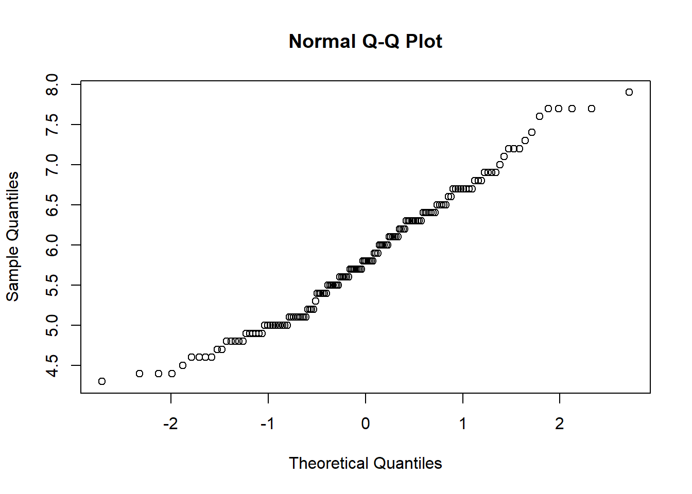

5.1 前提假設
| 前提假設 | 檢定(R) | 補救方案 |
|---|---|---|
| 樣本常態與誤差獨立 | qqnorm(iris$Sepal.Length)：點要接近對角線，否則不符常態 shapiro.test(iris$Sepal.Length)：顯著則不符常態 |
Box-Cox數據轉換 (MASS::boxcox) |
| 變異數均值 | bartlett.test(Sepal.Length~Species, data = iris) car::leveneTest(Sepal.Length~Species, data = iris) 顯著代表變異數不均值 |
Box-Cox數據轉換 (MASS::boxcox) |
- 樣本與誤差具常態性且彼此獨立
\(\epsilon \sim {\sf NID}(0,\sigma^2)\)
- 變異數均值假設
樣本是來自變異數相等的族群，譬如利用某機器量測一群稻穀樣本的重量，每次量測時，機器顯示的重量，都會受到機器本身設定的影響，呈現真實重量的固定百分比，因此具有這一群稻穀樣本會有相等的變異數。
當違反假設，且變因是固定型效應，在處理重複數量均衡（彼此相同）時，對Fo僅有微弱的影響；但在處理數不均衡時，則會使顯著水準或型I錯誤率與預期值偏離。當變因是隨機型效應時，不論處理是否均衡，違反假設都會造成極大影響。
5.1.1 檢驗方式
- 常態性檢定：
- 機率分布圖(QQ plot)：將殘差計算出來，從大排到小，按數據點在圖形上。如果屬於常態分佈，會像是一條直線，不會偏離太多。
- 使用
qqnorm查看QQ-plot
qqnorm(iris$Sepal.Length)
可以看出點很貼近線，數據應該符合常態。
- 使用
shapiro.tes檢定，顯著則代表不符合常態。
shapiro.test(iris$Sepal.Length)##
## Shapiro-Wilk normality test
##
## data: iris$Sepal.Length
## W = 0.97609, p-value = 0.01018因為P值不小於0.05，所以得知數據是常態分佈的資料。
- 獨立性與變異數均值的檢定：
- 順序與殘差圖：殘差如不獨立，彼此會有相關性，會一連串的正或負。將實驗進行的時間順序為X軸，殘差為Y軸作圖，應該是無結構的。
- 配適值與殘差圖：x軸為配適值(fitted value)，y軸為殘差(residuel)作圖。若殘差彼此之間獨立，ϵij畫出的圖不會有結構。喇叭狀代表違反獨立性與變異數均值假設。 \[\hat y_{ij}=\bar y_{i.}+\epsilon_{ij}\]
- 變異數均值的檢定： \(H_0:\sigma_1^2=\sigma_2^2=...=\sigma_a^2\) \(H_1:至少有一個\sigma_i^2不一樣\)
- Barlett’s test：顯著代表變異數不相等
- Levene’s test：顯著代表變異數不相等。
leveneTest(iris$Sepal.Length~iris$Species)## Levene's Test for Homogeneity of Variance (center = median)
## Df F value Pr(>F)
## group 2 6.3527 0.002259 **
## 147
## ---
## Signif. codes: 0 '***' 0.001 '**' 0.01 '*' 0.05 '.' 0.1 ' ' 1bartlett.test(iris$Sepal.Length~iris$Species)##
## Bartlett test of homogeneity of variances
##
## data: iris$Sepal.Length by iris$Species
## Bartlett's K-squared = 16.006, df = 2, p-value = 0.0003345上述兩個檢定皆為顯著，顯示iris數據的Sepal.Length在Species之間違反變異數相等的假說。